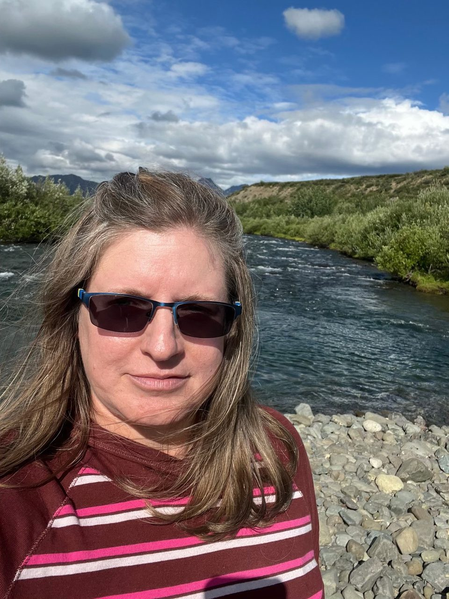

Karen Ryberg’s life was upended when she was diagnosed with Stage 3c breast cancer in September of 2025. Breast cancer is one of the most common cancers affecting women worldwide, where cells in breast tissue grow out of control and form tumors. Karen was diagnosed with Stage 3c breast cancer, which means that the tumor was larger and deeper in surrounding tissue and had spread to nearby lymph nodes. Lymph nodes are incredibly important for your body, as they filter harmful substances from your body and store white blood cells which attack invaders.
The diagnosis
After going through initial scans and testing, the doctors suspected breast cancer. When they broke the news, Karen was shocked. “It was difficult to know what to say. Lots of questions about details and treatment. I wanted to know when treatment would start.” However, more testing had to be done to confirm and get a clearer picture. Karen went through many rounds of testing, including MRI, CT scan, and bone scan. Between the CT scan and the bone scan, doctors suspected there were 2 different types of cancer, so they also had Karen undergo PET scanning.
Because of the ongoing diagnostic testing (there was concern that she might be stage 4) and uncertainty about the treatment plan, Karen held off on telling friends and family about her diagnosis. “I only told my husband [the news] right away. I didn’t tell others right away because there were so many unanswered questions. I didn’t want to tell others until I knew what was actually going on. I didn’t tell other close family members and friends until chemotherapy had started … at that point I felt like I knew the situation and plan. Everyone was shocked, but very supportive and kind.”
Finding ways to cope
Despite having such a supportive network, Karen still had to find ways to cope with the new discovery. Karen has always liked exercising, but the newfound diagnosis made its benefits more important than ever. “I exercised A LOT in the beginning. Exercise has been very important to my mental health, but … there has been a lot of ups and downs in terms of my ability to exercise.”
In addition to physical exercise, Karen says work helped give her something to focus on. Initially, it was a point of stress for her. “I was also about to start a new job and had a lot of fear of not performing well. I started seeing a counselor right away and that helped get worries off my chest.” But other people had differing beliefs about this. “I did encounter one person that thought I should not take the new job and just take the time off for cancer treatment. I do not think that would have been a good idea. Work gives a person purpose and motivation and is wonderful distraction from all of the trauma and uncertainty.” In addition, Karen read a lot of books, got massages and myofascial treatments and acupuncture to help with discomfort and side effects, and went on walks with her dog.
“Work gives a person purpose and motivation and is wonderful distraction from all of the trauma and uncertainty.”
A long treatment
Treatment lasted a long time for Karen. “I thought of breast cancer in simpler terms, like you find a lump, they cut it out. But I had an aggressive form of breast cancer (HER2-positive, HER2+, that tends to grow and spread rapidly) that spread to lymph nodes. That is much more serious than a lump that gets cut out and requires much more extensive treatments.” Treatment was incredibly extensive, with infusions of chemotherapy and immunotherapy drugs every 3 weeks from September to December. She continued immunotherapy every 3 weeks through August 2026.
“[The hardest thing about this journey was] the physical trauma. Chemotherapy affects every system of your body. By the end, I was walking like an old person because my connective tissues were so stiff. I lost hair. My skin was fragile… By the end of chemotherapy I was immunocompromised. There was substantial nerve damage … and a reduction in mobility. That has been a constant reminder of the trauma.”
At the end of January 2026, she underwent double mastectomy and axillary lymph node dissection. There was substantial nerve damage from both procedures, which resulted in reduced mobility. Following that, there were 15 rounds of radiation of the chest wall at the end of March and the beginning of April. In October of 2026, she underwent a surgical procedure to remove the chemo port and graft fat for body reconstruction. She’s been in physical therapy from February to present day, and now she has acupuncture and massage sessions to help the body recover.

Remission, and recovery
Now, Karen is in full remission. She recently underwent an MRI that indicated no evidence of any remaining cancer. But she is still recovering in many ways. “Most, including me, have no idea how long recovery takes… I am still not through the reconstruction process. While I have regained full mobility, my left side still feels tighter and it may be a long time before that feels normal.”
Karen’s advice
If you or someone you know recently got diagnosed, Karen advises to get a lot of exercise, body work, eat a healthy diet, and see a counselor or therapist. Of course, with the prevalence of breast cancer, the importance of awareness and early detection and prevention can’t be understated. “It is easier to treat cancer at stage 1 or 2, and while still traumatic, likely less traumatic because the treatment plan would be less extreme. Therefore, early detection is important. However, some people are diagnosed as stage 4 from the beginning, so you also can’t blame yourself if it is detected at stage 3 or 4 because some cancers are just more aggressive.”
This is one person’s experience, shared with Strands of Life, and not medical advice. If you have questions about breast cancer, screening or treatment, talk to a doctor.